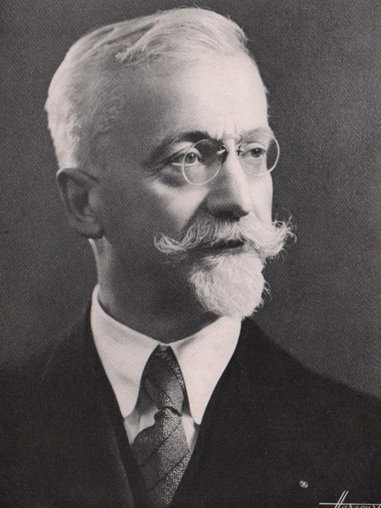

앞 절에서 피셔 행렬은 좌표를 바꿀 때 Fθ=JTFφJ로 바뀌었다. 그런데 θ도 φ도 이름표일 뿐이고, 이름표는 거리를 모른다. 두 분포가 얼마나 구별하기 쉬운가는 분포 자체의 성질이다. 그렇다면 매개변수 공간의 자는 분포 공간의 자를 함수 θ↦pθ를 거쳐 빌려 온 것이 아닐까? 문제는 이 함수가 되돌릴 수 없을 때가 많다는 것이다. 서로 다른 가중치가 똑같은 분포를 내는 신경망은 흔하다. 되돌릴 수 없는 함수를 따라서도 자를 빌려 올 수 있을까?
역사: 엘리 카르탕 (Élie Cartan, 1869–1951)

엘리 카르탕은 프랑스 알프스 기슭의 마을 돌로미외에서 대장장이의 아들로 태어나, 장학금으로 파리 고등사범학교에 들어갔다. 1899년 논문에서 카르탕은 적분 기호 안의 dx, dy를 계산용 표시가 아니라 그 자체로 계산할 수 있는 대상으로 다루는 방법을 내놓았다. 오늘날 미분형식이라 부르는 것이다. 미분형식은 어떤 매끄러운 함수를 따라서든, 그 함수가 되돌릴 수 없어도, 출발 공간 쪽으로 끌어올 수 있다. 좌표 바꾸기, 치환적분, 곡면 위의 적분이 이 한 가지 규칙으로 정리된다. 그의 글은 난해하기로 유명해서, 방법이 널리 이해된 것은 연구 경력의 후반에 이르러서였다고 전해진다.
풀백: 앞으로 보내 놓고 저쪽 자로 잰다
매끄러운 함수 f:M→N이 있고, 저쪽 N에만 거리를 재는 자 g가 있다고 하자. 이쪽 M에서 작은 변화 v가 얼마나 큰지 알고 싶다. 방법은 세 걸음이다.
v를 f로 저쪽에 보낸다. 야코비안 J가 "이쪽을 조금 움직이면 저쪽이 얼마나 움직이는가"를 적은 번역표이므로, 보낸 결과는 Jv다. 앞 절의 푸시포워드다.
저쪽 자 g로 잰다.
그 값을 v의 크기로 삼는다.
이 세 걸음을 한 덩어리로 묶어 이쪽의 자로 부른다. 자를 새로 만든 것이 아니라, 저쪽 자를 쓰는 절차에 이름을 붙인 것이다.
J가 두 번 나오는 까닭은 자가 화살표를 두 개 받기 때문이다(내적처럼). 오른쪽 J가 한 화살표를, 왼쪽 JT가 다른 화살표를 번역한다. 앞 절 문제 3의 "벡터는 한 번, 계량은 두 번"이 이것이다. 앞 절의 Fθ=JTFφJ도 좌표 바꾸기를 따라 피셔 계량을 끌어온 것이었다.
풀백 (끌어오기 / Pull-Back, f∗) — 매끄러운 함수 f:M→N을 따라 N 위의 "재는 도구"를 M 위로 가져오는 연산. 함수 h는 합성으로 f∗h=h∘f(지도의 점을 지구로 보내 그 자리 기온 h를 읽어 적기), 1-형식(화살표를 받아 숫자를 내는 눈금자) ω는 (f∗ω)(v)=ω(f∗v), 계량은 위 식. 함수는 M에서 N으로 가는데 끌려오는 것은 N에서 M으로 온다. 방향이 반대다.
왜 방향이 반대인가. 이쪽의 두 점이 저쪽 한 곳으로 간다고 해 보자. 두 점에 적힌 값이 다르면 앞으로 밀 때 저쪽에 무엇을 적을지 정할 수 없지만, 뒤로 끌어올 때는 두 점이 저쪽 값을 똑같이 받아 오면 된다. 그래서 화살표는 앞으로, 자·눈금자·함수는 뒤로 가고, 풀백은 함수가 되돌릴 수 없어도 언제나 정의된다.
장난감 예제: 치환적분. 학부 1학년 때 배운 치환적분 ∫h(x)dx=∫h(f(t))f′(t)dt에서 "dx를 f′(t)dt로 바꿔 쓴다"는 규칙이 바로 1-형식의 풀백 f∗dx=f′(t)dt다. f′(t)가 1×1 번역표다.
따라 계산해 보기 — 극좌표의 계량을 끌어와 구하기
극좌표 계량 dr2+r2dθ2은 외워야 할 공식이 아니다. 평면의 자를 끌어오면 나온다. 다이얼은 반지름 r과 각도 θ 둘이고, 결과는 평면 위의 실제 위치다.
눈금자부터 끌어온다.x=rcosθ를 미분하면 f∗dx=cosθdr−rsinθdθ, 같은 방법으로 f∗dy=sinθdr+rcosθdθ다.
제곱해서 더한다. 교차항 ∓2rsinθcosθdrdθ는 서로 지워지고 cos2+sin2=1이 남아 f∗g=dr2+r2dθ2이다. 행렬로 쓰면 J=(cosθsinθ−rsinθrcosθ), g=I이고 G=JTJ=diag(1,r2)로 같다.
숫자로 확인한다. 각도 다이얼을 0.01 라디안 돌리면, r=1에서는 점이 0.01만큼, r=10에서는 0.1만큼 움직인다. 번역표가 각도 방향에 r을 곱하기 때문이고, r2은 그 숫자의 제곱이다. 끌어온 자는 장소마다 다르다.
아래 위젯의 왼쪽은 다이얼 공간, 오른쪽은 결과 공간이다. 결과 공간의 작은 원(저쪽 자로 잰 길이 ϵ인 변화들)을 번역표로 끌어오면 다이얼 공간에서는 찌그러진 타원이 된다. 극좌표에서 다이얼 점을 원점 쪽으로 끌어 타원이 각도 방향으로 길어지는 것을 확인해 보자. 「로짓 두 개 → 확률」 버튼에서 타원이 띠로 펴지는 까닭은 다음 절에서 다룬다.
ML에서: 피셔 행렬과 밀도도 끌어온 것이다
피셔 행렬. 결과가 유한 개인 분포 공간에는 매개변수와 상관없는 자 ∑a(dpa)2/pa가 있다. 이것을 모델 θ↦pθ로 끌어오면 Fij=∑apa1∂θi∂pa∂θj∂pa이고, ∂logpa=∂pa/pa를 넣으면 스코어의 공분산, 곧 피셔 정보행렬 그대로다. 자는 분포 공간에 있으니, 이름표를 바꾸면 번역표와 그래디언트가 함께 바뀌어 상쇄된다. 자연 경사가 좌표에 휘둘리지 않는 이유다.
밀도의 풀백. 밀도는 "부피당 확률"이라 함수처럼 합성만 해서는 안 된다. 영역이 두 배로 늘면 같은 확률이 두 배 넓은 곳에 퍼져 밀도는 절반이 되므로, 부피 배율인 행렬식을 함께 곱한다. 노멀라이징 플로의 logpx(x)=logpz(z)+log∣det(∂z/∂x)∣가 이것이고, 치환적분의 f′(t) 자리에 행렬식이 온 것뿐이다. 계량은 화살표 두 개를 받아 J가 두 번(JTgJ), 밀도는 부피 하나를 받아 행렬식이 한 번 붙는다. 둘 다 풀백이지만 계산은 다르다.
문제 4 — 과일 바구니의 크기를 영수증으로 재기
확인 사과는 한 개 1,000원, 배는 한 개 1,500원이다. 바구니(사과 개수, 배 개수)를 넣으면 영수증 금액이 나온다. 바구니 쪽에는 "얼마나 큰 변화인가"를 재는 자가 없고, 금액 쪽에는 있다(금액 차이). (1) 금액 쪽 자를 끌어와 바구니 변화의 크기로 삼을 때, 사과 3개를 더 넣고 배 2개를 빼는 변화의 크기는 얼마인가? (2) 거꾸로, 바구니마다 적힌 무게(사과 250g, 배 400g)를 금액 쪽으로 밀어 "금액마다 무게 하나"를 적을 수 있는가?
같이 풀기 세션 4
김민준
(1)은 바구니가 (3,−2)만큼 변했으니까 크기는 9+4=13, 약 3.6이요. 꽤 큰 변화네요.
선생님
그건 바구니 쪽에 원래 자가 있다고 치고 잰 거예요. 문제는 금액 쪽 자를 끌어오라고 했죠. 세 걸음을 따라가 볼까요?
이서연
먼저 앞으로 보내요. 금액 변화는 3×1000−2×1500=0원. 금액 쪽 자로 재면 0이니까, 끌어온 자로는 이 변화의 크기가 0이에요.
김민준
바구니는 확 바뀌었는데 크기가 0이라고요? 아, 영수증만 보는 사람한테는 아무 일도 안 일어난 거구나.
이서연
(2)는 안 돼요. 사과 3개짜리 바구니와 배 2개짜리 바구니가 둘 다 3,000원인데 무게는 750g과 800g이에요. 3,000원 자리에 뭘 적을지 정할 수 없어요.
선생님
그래요. 끌어오기는 늘 되고, 밀어내기는 두 바구니가 같은 금액으로 갈 때 막혀요. 그리고 (1)의 "크기 0인 변화"를 기억해 두세요. 모양만 바꿔서 다시 나와요.
문제 5 — 구면의 계량을 3차원 공간에서 끌어오기
계산 반지름 R인 구면을 (θ,ϕ)↦R(sinθcosϕ,sinθsinϕ,cosθ)로 3차원 공간에 놓는다(θ는 북극에서 잰 각, ϕ는 경도). 3차원 공간의 보통 자 dx2+dy2+dz2를 끌어와 구면의 계량 G를 구하라. 극에서 경도 방향의 길이는 어떻게 되는가?
같이 풀기 세션 5
이서연
번역표 J는 3×2야. 첫 칸은 θ로 미분한 R(cosθcosϕ,cosθsinϕ,−sinθ), 둘째 칸은 ϕ로 미분한 R(−sinθsinϕ,sinθcosϕ,0). 3차원의 자는 단위행렬이니까 JJT를 계산하면… 3×3 행렬이 나오네.
선생님
그 3×3 행렬은 어느 공간의 화살표를 재는 자일까요? 우리가 원하는 자는 어디에 생겨야 하죠?
이서연
다이얼 쪽, (θ,ϕ) 쪽이요. 그러면 2×2여야 하니까 JTJ가 맞아요. 순서를 거꾸로 곱했어요.
김민준
그럼 칸끼리 내적하면 되네. 첫 칸 길이 제곱은 R2(cos2θ+sin2θ)=R2, 둘째 칸은 R2sin2θ, 두 칸의 내적은 cosϕsinϕ 항이 지워져서 0. G=diag(R2,R2sin2θ)요.
이서연
극에서는 sinθ=0이라 경도 방향 길이가 0이야. 경도 다이얼을 아무리 돌려도 극점은 제자리니까. 여기도 번역표가 납작해지는 곳이네.
선생님
맞아요. 구면 자체는 매끄러운데, 이 좌표로 놓는 함수가 극에서 납작해지는 거예요. 이런 곳은 다음 절에서 따로 봐요. 어쨌든 자를 식으로 외울 필요 없이, 바깥 공간의 평범한 자를 끌어오면 구면의 계량이 나와요.
이서연
행렬 곱 순서는 결과가 어느 쪽에 살아야 하는지로 정하면 되겠어요. 선형대수 시간에 "크기부터 맞춰 보라"던 말이 이거였네요.